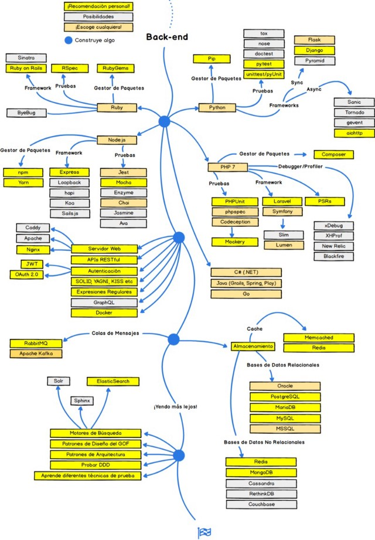

Subtemas
- 1.1 Roadmap o ruta de aprendizaje para desarrollo Backend
- 1.2 Conocimientos básicos de un desarrollador backend
GUÍAS / TUTORIALES
Roadmap o ruta de aprendizaje para desarrollo Backend
El Back-End “tradicional” es una combinación del servidor, las bases de datos, las APIs y los sistemas operativos que hacen funcionar el Front-End en una aplicación o página web.
Conocimientos básicos de un desarrollador backend
| Lenguajes básicos | Frameworks | Bases de datos | Otros |
|---|---|---|---|
| Python | Django | Relacional | Motores de búsqueda |
| Ruby | Ruby on Rails | No Relacional | Patrones de diseño |
| PHP | Symfony | Apache | Docker, GraphQL |
| C# | Angularjs | Nignx | Patrones de arquitectura |
| Java | Spring | MongoDB | Autenticación |
| Go | Beego | MySQL | APIs REST ful |